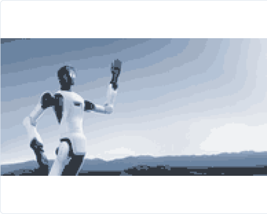

AGIBOT G2 / MANUFACTURING PoC
人が担う工程を、
G2で自動化できるか。
工場・製造現場の対象工程を起点に、移動、双腕操作、接触作業を組み合わせた自動化可能性を検証。機体販売だけでなく、工程整理、PoC設計、SDK確認、現場実装まで支援します。

01 / FACTORY PROBLEM
まず、ロボットではなく工程を決める。
人手不足・属人化
熟練者依存、採用難、夜間対応など、継続運用を妨げる工程を抽出。
3K・高負荷作業
きつい、汚い、危険につながる反復作業や接触作業を候補化。
多品種・変動工程
固定設備だけでは対応しにくい品種変更、位置ずれ、段取り替えを整理。
複数工程の移動
一地点の作業ではなく、移動と操作をまたぐ工程を対象に検討。
02 / CANDIDATE TASKS
G2で検討できる工程。
部品供給・搬送
棚、台車、設備間を移動し、対象物を受け渡す工程。
ピッキング・仕分け
対象物の識別、把持、持ち替え、配置を繰り返す工程。
設備への投入・取出し
人が設備前で行っているワークの投入、回収、次工程への受け渡し。
検査・巡回補助
複数地点を移動し、確認や記録、簡易操作を行う工程。
上記は検討領域です。実行可否は対象物、精度、速度、安全条件、周辺設備との連携を確認して判断します。
03 / WHY G2
従来自動化で残った領域を検討する。
移動と操作を一体化
固定ロボット単体では分断される「移動して作業する」工程を対象化。
双腕・接触作業
両手協調、持ち替え、押す・引くなど、接触を伴う作業をPoCで評価。
環境変化への対応
対象物や位置のばらつきを含む現場条件を、認識・制御と合わせて確認。
工程横断の拡張性
単一作業だけでなく、次工程へ展開できるかを初期PoCから設計。
04 / CONFIRMATION
価格・SDK・構成は正式確認する。
| 対象工程 | 作業手順、対象物、重量、精度、タクト、人の介入回数を整理。 |
|---|---|
| 機体・末端構成 | 腕、ハンド、センサー、演算、移動方式を対象工程に合わせて確認。 |
| SDK・API | 対象型番、制御レイヤー、通信、OS、外部機器連携の提供範囲を確認。 |
| 価格 | 本体、オプション、輸送、設定、PoC、追加開発費用を分けて正式見積。 |
| 納期 | 構成、在庫、輸送、日本向け条件を確認後に回答。 |
| 安全・運用 | 床面、通路、電源、ネットワーク、安全距離、停止方法、運用担当を確認。 |
| 保証・保守 | メーカー保証とAirAdmin8の一次切り分け、導入・運用支援範囲を分離。 |
05 / PoC FLOW
PoCは「動いた」で終わらせない。
1. 現場ヒアリング
対象工程、現状工数、制約、安全条件を確認。
2. 成功条件
処理時間、成功率、介入率、停止条件を定義。
3. 小規模検証
対象物と環境を絞り、技術成立性と追加開発量を確認。
4. 導入判断
効果、コスト、運用負荷、展開可能性から次工程を決定。
FAQ
導入前によくある確認。
NEXT ACTION
自社工程を、まず1つ持ち込んでください。
工程動画、対象物の写真、作業時間、困っている点があれば初回相談を具体化できます。資料が揃っていなくても、ヒアリングから整理します。